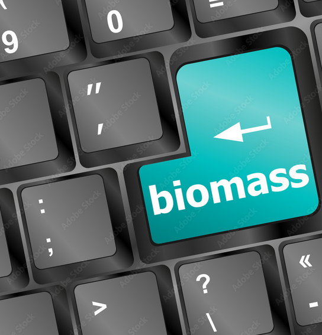

Estimation de la biomasse des couverts intermédiaires (CI) par télédétection et modélisation
Synthèse du travail bibliographique réalisé sur le sujet (Définitions et concepts de base, État de l'art etc.)

Concepts et défintions : Biomasse, Matière Sèche, Couverts intérmédiaires (CI)
La biomasse désigne la quantité totale de matière organique vivante dans un système, tel qu'une forêt ou un champ agricole. Elle comprend un large éventail de matières organiques, comme les feuilles...
Lire la suite →

Les différentes méthodes d'estimation de la biomasse
Selon les objectifs souhaités ainsi que les ressources et données disponibles, nous pouvons avoir recours à différentes méthodes et/ou modèles pour l’estimation de la biomasse et de la matière sèche. Dans ce sens, on distingue...
Lire la suite →

L’intelligence artificielle pour l’estimation de la biomasse
L'IA est devenue très importante en raison de sa capacité à traiter de vastes quantités de données et à prendre des décisions en temps réel. Elle est largement utilisée dans divers domaines, notamment dans l'agriculture où elle apporte des solutions innovantes telles que l'estimation de la biomasse, l'utilisation de robots agricoles, le diagnostic des maladies…
Lire la suite →
État de l’art
Il existe plusieurs méthodologies pour estimer la biomasse, allant des techniques basées sur la télédétection et l'apprentissage machine à celles basées sur des modèles de simulation de croissance de la plante. Dans ce qui suit, nous allons explorer divers articles qui…
Lire la suite →